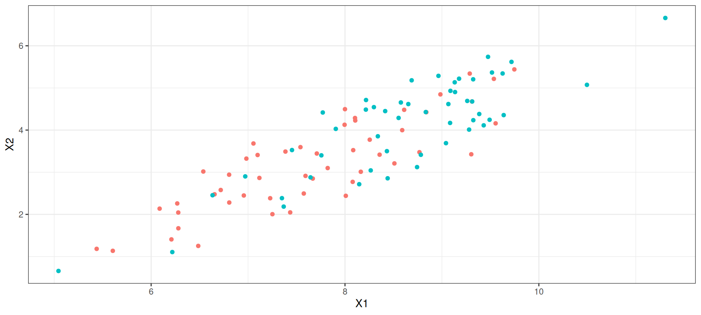
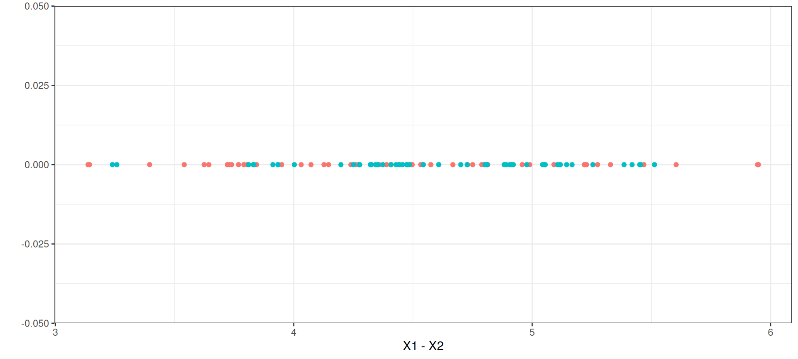
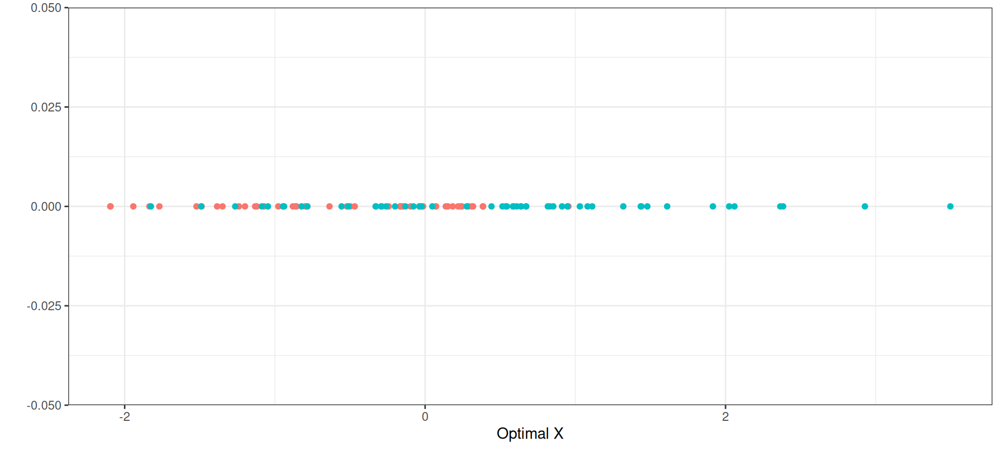

library(MASS)
library(tidyverse)
n <- 50
R <- matrix(
c(1, 0.8, 0.8, 1),
nrow = 2, ncol = 2, byrow = TRUE
)
mu_1 <- c(X = 7.5, Y = 3)
data_1 <- MASS::mvrnorm(n, mu = mu_1, Sigma = R)
mu_2 <- c(X = 8.5, Y = 4)
data_2 <- MASS::mvrnorm(n, mu = mu_2, Sigma = R)
data <- data.frame(rbind(data_1, data_2))
data$group <- as.factor(rep(c(1, 2), each = n))
model <- lda(group ~ ., data = data)
data$new_X <- predict(model, data)$xSupervisée
Analyse discriminante
Steven Golovkine
07 nov. 2025
Plan
La théorie de l’analyse discriminante
L’analyse discriminante en pratique
Exemple
Notation
Données:
\(X = (X_{ij}) \in \mathbb{R}^{n \times p}\) : matrice de données.
\(n\) : nombre d’individus / d’observations.
\(p\) : nombre de variables.
Groupes:
\(K\) groupes dans la population.
\(I_k\) : ensemble des individus du groupe \(k\).
\(n_k\) : nombre d’observations dans \(I_k\) et \(\sum_{k=1}^{K} n_k = n\).
Objectif principal
Principe:
Partitionner \(\mathbb{R}^p\) en \(K\) sous-ensembles.
Passer de \(\mathbb{R}^p\) à \(\mathbb{R}\) via un score.
Score de Fisher
\[f(X_1, \ldots, X_p) = a^{\top} X + b = a_1 X_1 + \cdots + a_p X_p + b\]
Utiliser ce score pour déterminer le groupe d’appartenance.
Simplification
En centrant les variables: \(-b = a^{\top} \overline{X}\).
Il reste à déterminer le vecteur \(a = (a_1, \ldots, a_p)\).
Intuition
On voudrait choisir le vecteur \(a\) de sorte que les scores soient
très différents entre les groupes
très similaire à l’intérieur des groupes
On s’intéresse donc à la variabilité des scores à l’intérieur des groupes et entre les groupes.
Optimiser le rapport entre la variabilité inter-groupes (maximiser) et la variabilité intra-groupe (minimiser).
Matrices de variance-covariance
\(S\) : matrice de variance totale
\(W\) : matrice de variance intra-groupe
\(B\) : matrice de variance inter-groupe
Relation fondamentale:
\[S = W + B\]
Matrices de variance-covariance
Matrice totale: \(S = \sum_{i=1}^{n} (X_i - \overline{X})(X_i - \overline{X})^{\top}\)
Matrice intra-groupe: \(W = \sum_{k=1}^{K} \sum_{i \in I_k} (X_i - \overline{X}_k)(X_i - \overline{X}_k)^{\top}\)
Matrice inter-groupe: \(B = \sum_{k=1}^{K} n_k (\overline{X}_k - \overline{X})(\overline{X}_k - \overline{X})^{\top}\)
Variabilité des scores
Étant donné que \(a \in \mathbb{R}^p\), on a: \[\mathrm{Var}(f(X_{1}, \dots, X_p)) = \mathrm{Var}(a^{\top} X) = a^{\top} \mathrm{Var}(X) a.\]
Comme \(S\) est un estimateur de la variance totale de \(X\),
\[\widehat{\mathrm{Var}}(f(X_{1}, \dots, X_p)) = \frac{1}{n} a^{\top} S a = \frac{1}{n} \left( a^{\top} W a + a^{\top} B a \right).\]
Critère d’optimisation
\[J(a) = \frac{a^{\top} B a}{a^{\top} W a} = \frac{a^{\top} B a}{a^{\top} S a}\]
Formulations équivalentes
Maximiser \(J(a)\) sous contrainte \(a^{\top} a = 1\)
Maximiser \(a^{\top} B a\) sous contrainte \(a^{\top} S a = 1\)
Maximiser \(c^{\top} S^{-1/2} B S^{-1/2} c\) sous contrainte \(c^{\top} c = 1\) où \(c = S^{1/2} a\).
Solution optimale
En réécrivant la troisième formulation
\[c^{\top} \left( S^{-1/2} B S^{-1/2} \right) c \quad\text{s.c.}\quad c^{\top} c = 1,\]
On peut prendre \(a = S^{-1/2} c\), où \(c\) est un vecteur propre normé associé à \(\lambda_{1}\), la première valeur propre de \(S^{-1/2} B S^{-1/2}\).
Fonction discriminante
\[f(x) = a^{\top} (x - \overline{X})\]
Scores des observations \[U_i = a^{\top} (X_i - \overline{X})\] Ces scores maximisent le rapport variance inter-groupe / variance intra-groupe
Exemple



Pouvoir discriminant
Interprétation de \(\lambda_1\) → pouvoir discriminant de \(f\) \[\lambda_1 = \frac{a^{\top} B a}{a^{\top} S a} \quad \text{avec } 0 \leq \lambda_1 \leq 1\]
\(\lambda_1 = 1\) : Cas idéal
\(\lambda_1 = 0\) : Analyse inutile
Règle de classification
Score moyen par groupe \[m_k = a^{\top} (\overline{X}_{k1}, \ldots, \overline{X}_{kp})^{\top}\]
Classification d’une nouvelle observation \(X_0\)
Calculer le score: \(f(X_0) = a^{\top} X_0\)
Assigner au groupe \(k^*\) tel que:
\[k^* = \arg\min_{k} |a^{\top} X_0 - m_k|\]
Cas binaire (\(K = 2\))
Solution explicite \[C = \sqrt{\frac{n_1 n_2}{n}} (\overline{X}_1 - \overline{X}_2)\] \[B = CC^{\top}, \quad a = S^{-1}C\]
Cas binaire (\(K = 2\))
Règle de classification
Si \(m_{1} = a^{\top} \overline{X}_1 > a^{\top} \overline{X}_2 = m_{2}\), classer \(X_0\) dans le groupe 1 si: \[a^{\top} X_0 > \frac{m_1 + m_2}{2}\]
Évaluation de la performance
Matrice de confusion
Appliquer la règle de classification à l’échantillon d’apprentissage
Comparer les classifications prédites aux vraies classes
Estimer les risques de mauvaise classification
Exemple
\(49\) hommes âgés ont été déclarés soit en bonne santé mentale (Groupe I), soit séniles (Groupe II) à la suite d’examens psychiatriques poussés. Les mêmes sujets ont été soumis à \(4\) tests standards beaucoup moins coûteux :
| Test | Group I (\(n_1 = 37\)) | Group II (\(n_2 = 12\)) |
|---|---|---|
| Information | 12.57 | 8.75 |
| Similitudes | 9.57 | 5.33 |
| Arithmétique | 11.49 | 8.50 |
| Complétion de dessins | 7.97 | 4.75 |
Exemple
Pour cette étude, on a trouvé que
\[\frac{S}{n} = \begin{pmatrix} 11.2552 & 9.4042 & 7.1489 & 3.3830 \\ & 13.5318 & 7.3830 & 2.5532 \\ & & 11.5744 & 2.6170 \\ & & & 5.8085 \end{pmatrix},\] \[C = \sqrt{\frac{n_1 n_2}{n}} (\overline{X}_1 - \overline{X}_2) = \sqrt{\frac{37 \times 12}{49}} \begin{pmatrix} 3.82 \\ 4.24 \\ 2.99 \\ 3.22\end{pmatrix}\]
Exemple
En principe, on a \[a = S^{-1} C,\] mais on peut tout aussi bien utiliser \[a = n S^{-1} C\] puisque \(a\) n’est défini qu’à une constante multiplicative près.
Exemple
En effectuant les calculs décrits précédemment, on trouve \[m_1 = a^\top \overline{X}_1 = 5.97 \quad\text{et}\quad m_2 = a^\top \overline{X}_2 = 3.54,\] ce qui conduit à déclarer un individu sénile si \[a^\top X > \frac{m_1 + m_2}{2} = 4.755.\]
Exemple
Matrice de confusion :
| Diagnostic clinique → | OK | Sénile | Totaux |
|---|---|---|---|
| Classé OK | 29 | 4 | 33 |
| Classé sénile | 8 | 8 | 16 |
| Totaux | 37 | 12 | 49 |
Conclusion
L’analyse discrimante est un algorithme de classification supervisée qui :
est simple et interprétable.
a une solution analytique explicite.
permet une réduction de dimension naturelle (\(\mathbb{R}^p \to \mathbb{R}\)).
Prochaine étape → Des arbres !